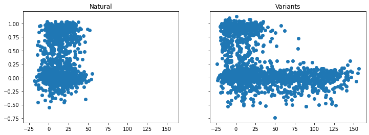
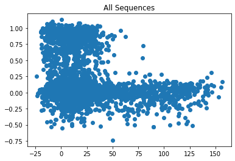
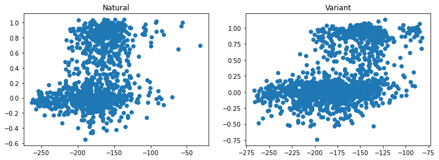
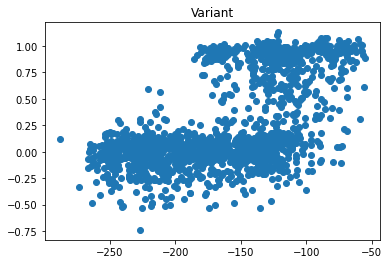
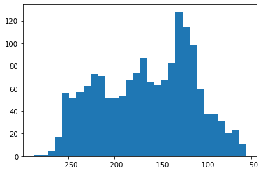
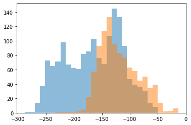

%matplotlib inlineConnect to the OpenProtein.AI API
import numpy as np
import pandas as pd
import matplotlib
import matplotlib.pyplot as plt
import scipy
from scipy.stats import pearsonr,spearmanr,kendalltau
import json
import timeimport openprotein
import openprotein.fasta as fastawith open('secrets.config', 'r') as f:
config = json.load(f)
session = openprotein.connect(config['username'], config['password'])
print(session.backend)Backend.PRODLoad the chorismate mutase dataset
table_natural = pd.read_csv('data/chorismate_mutase_natural_sequences.csv')
table_variant = pd.read_csv('data/chorismate_mutase_variant_sequences.csv')
table_natural.head()| No. | Species | Sequence | ID to EcCM | top ID | EDCA (rel. to EcCM) | norm r.e. | |
|---|---|---|---|---|---|---|---|
| 0 | 1 | Escherichia coli ... | -TSENPLLALREKISALDEKLLALLAERRELAVEVGKAKLLSHRPV... | 1.00 | 0.93 | 0.00 | 1.00 |
| 1 | 2 | Thermus thermophilus HB8 ... | ---DERIQALRKEVDRVNREILRLLSERGRLVQEIGRLQTELGLPH... | 0.26 | 0.89 | 28.62 | -0.06 |
| 2 | 3 | Pseudomonas aeruginosa UCBPP-PA14 ... | PEDCTGLADIREAIDQIDLDIVQALGRRMDYVKAASRFKANEA-AI... | 0.20 | 0.71 | -4.19 | 0.04 |
| 3 | 4 | Enterobacter cloacae subsp. dissolvens SDM ... | -TPENPLLDLRVKISALDEKLLALLAERRALAIEVGKAKLDSHRPV... | 0.93 | 0.93 | 8.57 | 0.65 |
| 4 | 5 | Thermus aquaticus Y51MC23 ... | ---DERIQALRREVDRVNRELLRLLSERGRLVQEIGRIQTELGLPH... | 0.28 | 0.89 | 18.42 | -0.08 |
table_variant.head()| No. | T | reg. value | Sequence | ID to EcCM | top ID | EDCA (rel. to EcCM) | norm r.e. | |
|---|---|---|---|---|---|---|---|---|
| 0 | 1131 | 0.33 | 0.01 | --TDNPLLALRERISALDLKLLALLAERRALALEVARTKLASHRPI... | 0.78 | 0.82 | -16.37 | 0.85 |
| 1 | 1132 | 0.33 | 0.01 | LLVGLFFSTTALAAAIPSEDVASLINQRLSYMKDVAGYKANNHLAI... | 0.14 | 0.84 | -0.39 | 0.04 |
| 2 | 1133 | 0.33 | 0.01 | PEDCEGLADIRRGIDALDREIVQILGRRLGYVKAASQFKPSEQ--I... | 0.20 | 0.73 | -3.03 | -0.02 |
| 3 | 1134 | 0.33 | 0.01 | PAAREELLELRGSIDNIDAALVHLLAERFKCTQRVGRLKARHGLPP... | 0.30 | 0.81 | -9.73 | -0.11 |
| 4 | 1135 | 0.33 | 0.01 | ----KKLEEYRKEIDEIDKEIIKLFEKRMDVVLKVIEYKKKNNMPI... | 0.18 | 0.65 | 0.70 | 0.88 |
_, axs = plt.subplots(1, 2, figsize=(12, 4), sharex=True, sharey=True)
axs[0].scatter(table_natural['EDCA (rel. to EcCM)'].values, table_natural['norm r.e.'].values)
axs[0].set_title('Natural')
axs[1].scatter(table_variant['EDCA (rel. to EcCM)'].values, table_variant['norm r.e.'].values)
axs[1].set_title('Variants')
print('Natural', spearmanr(table_natural['EDCA (rel. to EcCM)'].values, table_natural['norm r.e.'].values))
print('Variants', spearmanr(table_variant['EDCA (rel. to EcCM)'].values, table_variant['norm r.e.'].values))Natural SpearmanrResult(correlation=0.035330109128214444, pvalue=0.23534819924369454)
Variants SpearmanrResult(correlation=-0.409259087679051, pvalue=2.2790178256876762e-66)
x = np.concatenate([
table_natural['EDCA (rel. to EcCM)'].values,
table_variant['EDCA (rel. to EcCM)'].values,
])
y = np.concatenate([
table_natural['norm r.e.'].values,
table_variant['norm r.e.'].values,
])
plt.scatter(x, y)
plt.title('All Sequences')
print('All', spearmanr(x, y))All SpearmanrResult(correlation=-0.2746346565247013, pvalue=9.571166707058114e-49)
Use EcCM (E. coli chorismate mutase) as the seed sequence
seed = table_natural.iloc[0]['Sequence']
seed = seed.replace('-', '')
seed'TSENPLLALREKISALDEKLLALLAERRELAVEVGKAKLLSHRPVRDIDRERDLLERLITLGKAHHLDAHYITRLFQLIIEDSVLTQQALLQQH'Rank the natural and variant sequences
msa = session.prots2prot.create_msa(seed.encode())
print(msa)
prompt = session.prots2prot.sample_prompt(msa, num_ensemble_prompts=3, random_seed=42)
print(prompt)status=<JobStatus.SUCCESS: 'SUCCESS'> job_id='62c52db6-3ae2-4c90-9c14-533162a29dd1' job_type='workflow/align/align' created_date=datetime.datetime(2023, 5, 2, 10, 53, 8, 791528) start_date=None end_date=datetime.datetime(2023, 5, 2, 10, 53, 8, 812409) prerequisite_job_id=None progress_message=None progress_count=None msa_id='62c52db6-3ae2-4c90-9c14-533162a29dd1'
status=<JobStatus.SUCCESS: 'SUCCESS'> job_id='99bdc24a-95e4-4bb9-995e-9ef10a6ca5ba' job_type='workflow/align/prompt' created_date=datetime.datetime(2023, 5, 2, 10, 53, 9, 162413) start_date=None end_date=None prerequisite_job_id=None progress_message=None progress_count=None prompt_id='99bdc24a-95e4-4bb9-995e-9ef10a6ca5ba'sequences = table_natural['Sequence'].apply(lambda s: s.replace('-', '').encode()).values
print(sequences.shape)
future_natural = session.prots2prot.score(prompt, sequences)
print(future_natural.job)(1130,)
status=<JobStatus.PENDING: 'PENDING'> job_id='064cdcc3-a76c-4585-9813-264b4e31b44e' job_type='/workflow/prots2prot' created_date=datetime.datetime(2023, 5, 2, 10, 54, 17, 851821) start_date=None end_date=None prerequisite_job_id=None progress_message=None progress_count=None parent_id=None s3prefix=None page_size=None page_offset=None num_rows=None result=None n_completed=Nonesequences = table_variant['Sequence'].apply(lambda s: s.replace('-', '').encode()).values
print(sequences.shape)
future_variant = session.prots2prot.score(prompt, sequences)
print(future_variant.job)(1618,)
status=<JobStatus.PENDING: 'PENDING'> job_id='956ee5a7-30c1-4272-8396-78f2f05f923a' job_type='/workflow/prots2prot' created_date=datetime.datetime(2023, 5, 2, 11, 35, 24, 779521) start_date=None end_date=None prerequisite_job_id=None progress_message=None progress_count=None parent_id=None s3prefix=None page_size=None page_offset=None num_rows=None result=None n_completed=Noneresults_natural = future_natural.wait(verbose=True)
results_variant = future_variant.wait(verbose=True)
print(len(results_natural), len(results_variant))1it [00:00, 2.54it/s, status=SUCCESS]
112it [05:18, 2.84s/it, status=SUCCESS]1130 1618scores_natural = np.array([r.score for r in results_natural])
scores_variant = np.array([r.score for r in results_variant])
scores_natural.shape, scores_variant.shape((1130, 3), (1618, 3))score_natural = scores_natural.mean(axis=1)
score_variant = scores_variant.mean(axis=1)
score_natural.shape, scores_variant.shape((1130,), (1618, 3))_, axs = plt.subplots(1, 2, figsize=(12, 4))
x = score_natural
y = table_natural['norm r.e.'].values
axs[0].scatter(x, y)
axs[0].set_title('Natural')
print('Natural', spearmanr(x, y))
x = score_variant
y = table_variant['norm r.e.'].values
axs[1].scatter(x, y)
axs[1].set_title('Variant')
print('Variant', spearmanr(x, y))Natural SpearmanrResult(correlation=0.3482140322743968, pvalue=1.4801709792817108e-33)
Variant SpearmanrResult(correlation=0.4967878271499042, pvalue=1.3965664362656567e-101)
x = np.concatenate([
score_natural,
score_variant,
])
y = np.concatenate([
table_natural['norm r.e.'].values,
table_variant['norm r.e.'].values,
])
plt.scatter(x, y)
plt.title('All Sequences')
print('All', spearmanr(x, y))All SpearmanrResult(correlation=0.44488113678989877, pvalue=1.059566612055129e-133)
What if we use the functional natural sequences as the prompt?
table_nat_functional = table_natural.loc[table_natural['norm r.e.'] >= 0.45]
print(table_nat_functional.shape)
table_nat_functional.head()(407, 7)| No. | Species | Sequence | ID to EcCM | top ID | EDCA (rel. to EcCM) | norm r.e. | |
|---|---|---|---|---|---|---|---|
| 0 | 1 | Escherichia coli ... | -TSENPLLALREKISALDEKLLALLAERRELAVEVGKAKLLSHRPV... | 1.00 | 0.93 | 0.00 | 1.00 |
| 3 | 4 | Enterobacter cloacae subsp. dissolvens SDM ... | -TPENPLLDLRVKISALDEKLLALLAERRALAIEVGKAKLDSHRPV... | 0.93 | 0.93 | 8.57 | 0.65 |
| 5 | 6 | Salmonella enterica subsp. enterica serovar Sa... | -TSENPLLALRDKISALDEELLALLAKRRALAIEVGQAKLLSHRPV... | 0.90 | 0.89 | 9.83 | 0.70 |
| 6 | 7 | Cronobacter sakazakii ATCC BAA-894 ... | -TAENPLLALRDKISALDEQLLALLAQRRALAVEVGKAKLATHRPV... | 0.91 | 0.90 | 6.42 | 0.95 |
| 8 | 9 | Erwinia billingiae Eb661 ... | -TPENPLLGLRDKISALDEQLLNMLAQRRALAIEVATAKMATHRPI... | 0.80 | 0.85 | 26.25 | 0.84 |
from io import BytesIO
msa_const = session.prots2prot.upload_msa(BytesIO(b'\n'.join(table_nat_functional['Sequence'].apply(lambda s: s.encode()))))
print(msa_const)
prompt_const = session.prots2prot.sample_prompt(msa_const, num_ensemble_prompts=3, random_seed=42)
print(prompt_const)status=<JobStatus.SUCCESS: 'SUCCESS'> job_id='b35fa25d-64e9-46e5-9b02-5cce2c1a6751' job_type='workflow/align/align' created_date=datetime.datetime(2023, 5, 2, 11, 48, 3, 691239) start_date=None end_date=datetime.datetime(2023, 5, 2, 11, 48, 3, 704917) prerequisite_job_id=None progress_message=None progress_count=None msa_id='b35fa25d-64e9-46e5-9b02-5cce2c1a6751'
status=<JobStatus.SUCCESS: 'SUCCESS'> job_id='44218875-e55a-4285-99cf-1a1c95584959' job_type='workflow/align/prompt' created_date=datetime.datetime(2023, 5, 2, 11, 48, 4, 139727) start_date=None end_date=None prerequisite_job_id=None progress_message=None progress_count=None prompt_id='44218875-e55a-4285-99cf-1a1c95584959'sequences = table_variant['Sequence'].apply(lambda s: s.replace('-', '').encode()).values
print(sequences.shape)
future_variant_const = session.prots2prot.score(prompt_const, sequences)
print(future_variant_const.job)(1618,)
status=<JobStatus.PENDING: 'PENDING'> job_id='29bc8f97-a508-49c3-8b97-a3b3150a4270' job_type='/workflow/prots2prot' created_date=datetime.datetime(2023, 5, 2, 11, 49, 5, 893006) start_date=None end_date=None prerequisite_job_id=None progress_message=None progress_count=None parent_id=None s3prefix=None page_size=None page_offset=None num_rows=None result=None n_completed=Noneresults_variant_const = future_variant_const.wait(verbose=True)
print(len(results_variant_const))118it [05:36, 2.85s/it, status=SUCCESS]1618scores_variant_const = np.array([r.score for r in results_variant_const])
score_variant_const = scores_variant_const.mean(axis=1)
scores_variant_const.shape, score_variant_const.shape((1618, 3), (1618,))_, ax = plt.subplots(figsize=(6, 4))
x = score_variant_const
y = table_variant['norm r.e.'].values
ax.scatter(x, y)
ax.set_title('Variant')
print('Variant', spearmanr(x, y))Variant SpearmanrResult(correlation=0.5441387133550285, pvalue=2.2734091856501145e-125)
_ = plt.hist(score_variant_const, bins=30)
Use this prompt to generate some new sequences
future_gen = session.prots2prot.generate(prompt_const, num_samples=1000, topp=0.9)
print(future_gen.job)status=<JobStatus.PENDING: 'PENDING'> job_id='51a2d578-fff2-4d68-b9a8-30557285dd60' job_type='/workflow/prots2prot/generate' created_date=datetime.datetime(2023, 5, 2, 13, 26, 16, 71719) start_date=None end_date=None prerequisite_job_id=None progress_message=None progress_count=Noneresults_gen = future_gen.wait(verbose=True)
print(len(results_gen))873it [41:54, 2.88s/it, status=SUCCESS]1000sample_names = np.array([s.name for s in results_gen])
sample_sequences = np.array([s.sequence for s in results_gen])
sample_scores = np.array([s.score for s in results_gen]).mean(axis=1)
order = np.argsort(-sample_scores)
for i in order[:10]:
print(sample_names[i], sample_scores[i], sample_sequences[i].decode(), sep='\t')generated-sequence-267 -13.368366877237955 SSEKKLEEIRKRISEIDEQLITLIAERTGFAPEIASLKNSLGASVTDSKREQDICEQTRILCEECIECSVALKIIKILMEYNKEVQAEFFRKV
generated-sequence-555 -13.830108960469564 QPNERLNDLRRAVDHLDDQLLDILQERFAVIDQIGAHKREHHLSVFQSDRWKDVMESRTQKGVQNLSEKFMKELLYSIHEESVKRQEKQLRES
generated-sequence-586 -13.896090507507324 QPNERLNDLRRAVDHLDDQLLDILQERFAVIDQIGAHKREHHLSVFQSDRWKDVMESRTQKGVQNLSEKFMKELLYSIHEESVKRQEKQLKES
generated-sequence-260 -17.756848017374676 LNDLRRAVDHLDDQLLDILQERFAVIDQIGAHKREHHLSVFQSDRWKDVMESRTQKGVQNLSEKFMKELLYSIHEESVKRQERQLRES
generated-sequence-379 -17.915011088053387 SEKRLEEIRKRISEIDEQLITLIAERTGFAPEIASLKNSLGASVTDSKREQDICEQTRILCEECIECSVALKIIKILMEYNKEVQAEFFRKL
generated-sequence-222 -18.62750752766927 NKNLDLGELRSQLDEIDGQLVRLFEQRMKICADVAEYKIETGKAVYDGERERQKLEAVGAMAHGFNSQAVRELFSQLMTVSRKRQYQLLARH
generated-sequence-513 -27.403642654418945 SSDAKLEEIRKRISEIDEQLIALIAERTGFAPEIASLKNSLGASVTDSKREQDICEQTRILCEECIECSVALKIIKILMEYNKEVQAEFFRKV
generated-sequence-177 -29.403276761372883 TENPLLALRERISALDLKLLSLLAERRELAVEVGKTKLHSHRPIRDKERERDLLDALIAAAKYDLDGFYVTRLFQLIIEDSVLTQQSLLQNQ
generated-sequence-164 -30.386859893798828 DLDRIRGQLDEIDGQLVRLFEQRMKLCADVAEYKIETGKAVYDGERERQKLEAVGAMAHGFNSQAVRELFSQLMTVSRKRQYQLLARH
generated-sequence-877 -31.9000727335612 SDNPLLVLRERISALDLKLLTLLAERRELAVEVGKTKLHSHRPIRDKERERDLLDALIAAAKHDLDGFYVTRLFQLIIEDSVLTQQSLLQNQ#mi = min(np.min(score_variant_const), np.min(sample_scores))
mi = np.min(score_variant_const)
ma = max(np.max(score_variant_const), np.max(sample_scores))
bins = np.linspace(mi, ma, 31)
_ = plt.hist(score_variant_const, bins=bins, alpha=0.5)
_ = plt.hist(sample_scores, bins=bins, alpha=0.5)
Compare these with the seed sequence used to build the prompt
from Bio import pairwise2
import Bio.Align.substitution_matrices
blosum62 = Bio.Align.substitution_matrices.load('blosum62')for i in order[:10]:
x = sample_sequences[i].decode()
print(f'>{sample_names[i]} {sample_scores[i]}')
for a in pairwise2.align.globalds(seed, x, blosum62, -11, -1):
print(pairwise2.format_alignment(*a))
break>generated-sequence-267 -13.368366877237955
TSENPLLALREKISALDEKLLALLAERRELAVEVGKAKLLSHRPVRDIDRERDLLERLITLGKAHHLDAHYITRLFQLIIEDSVLTQQALLQQH
.||..|...|..||..||.|..|.|||...|.|....|......|.|..||.|..|....|.. ................|.....|.......
SSEKKLEEIRKRISEIDEQLITLIAERTGFAPEIASLKNSLGASVTDSKREQDICEQTRILCE-ECIECSVALKIIKILMEYNKEVQAEFFRKV
Score=89
>generated-sequence-555 -13.830108960469564
TSENPLLALREKISALDEKLLALLAERRELAVEVGKAKLLSHRPVRDIDRERDLLERLITLGKAHHLDAHYITRLFQLIIEDSVLTQQALLQQH
.....|..||.....||..||..|.||.......|..|...|..|...||..|..|.....| ...|.......|...|.|.||..|...|...
QPNERLNDLRRAVDHLDDQLLDILQERFAVIDQIGAHKREHHLSVFQSDRWKDVMESRTQKG-VQNLSEKFMKELLYSIHEESVKRQEKQLRES
Score=84
>generated-sequence-586 -13.896090507507324
TSENPLLALREKISALDEKLLALLAERRELAVEVGKAKLLSHRPVRDIDRERDLLERLITLGKAHHLDAHYITRLFQLIIEDSVLTQQALLQQH
.....|..||.....||..||..|.||.......|..|...|..|...||..|..|.....| ...|.......|...|.|.||..|...|...
QPNERLNDLRRAVDHLDDQLLDILQERFAVIDQIGAHKREHHLSVFQSDRWKDVMESRTQKG-VQNLSEKFMKELLYSIHEESVKRQEKQLKES
Score=84
>generated-sequence-260 -17.756848017374676
TSENPLLALREKISALDEKLLALLAERRELAVEVGKAKLLSHRPVRDIDRERDLLERLITLGKAHHLDAHYITRLFQLIIEDSVLTQQALLQQH
... ||.....||..||..|.||.......|..|...|..|...||..|..|.....| ...|.......|...|.|.||..|...|...
LND-----LRRAVDHLDDQLLDILQERFAVIDQIGAHKREHHLSVFQSDRWKDVMESRTQKG-VQNLSEKFMKELLYSIHEESVKRQERQLRES
Score=76
>generated-sequence-379 -17.915011088053387
TSENPLLALREKISALDEKLLALLAERRELAVEVGKAKLLSHRPVRDIDRERDLLERLITLGKAHHLDAHYITRLFQLIIEDSVLTQQALLQQH
||..|...|..||..||.|..|.|||...|.|....|......|.|..||.|..|....|.. ................|.....|.......
-SEKRLEEIRKRISEIDEQLITLIAERTGFAPEIASLKNSLGASVTDSKREQDICEQTRILCE-ECIECSVALKIIKILMEYNKEVQAEFFRKL
Score=76
>generated-sequence-222 -18.62750752766927
TSENPLLALREKISALDEKLLALLAERRELAVEVGKAKLLSHRPVRDIDRERDLLERLITLGKAHHLDAHYITRLFQLIIEDSVLTQQALLQQH
.....|..||......|..|..|...|......|...|......|.|..|||..||..... ||.........||......|...|..||..|
NKNLDLGELRSQLDEIDGQLVRLFEQRMKICADVAEYKIETGKAVYDGERERQKLEAVGAM--AHGFNSQAVRELFSQLMTVSRKRQYQLLARH
Score=88
>generated-sequence-513 -27.403642654418945
TSENPLLALREKISALDEKLLALLAERRELAVEVGKAKLLSHRPVRDIDRERDLLERLITLGKAHHLDAHYITRLFQLIIEDSVLTQQALLQQH
.|...|...|..||..||.|.||.|||...|.|....|......|.|..||.|..|....|.. ................|.....|.......
SSDAKLEEIRKRISEIDEQLIALIAERTGFAPEIASLKNSLGASVTDSKREQDICEQTRILCE-ECIECSVALKIIKILMEYNKEVQAEFFRKV
Score=88
>generated-sequence-177 -29.403276761372883
TSENPLLALREKISALDEKLLALLAERRELAVEVGKAKLLSHRPVRDIDRERDLLERLITLGKAHHLDAHYITRLFQLIIEDSVLTQQALLQQH
| |||||||||.|||||.|||.||||||||||||||.||.||||.||..||||||..||...| ..||..|.||||||||||||||||.|||..
T-ENPLLALRERISALDLKLLSLLAERRELAVEVGKTKLHSHRPIRDKERERDLLDALIAAAK-YDLDGFYVTRLFQLIIEDSVLTQQSLLQNQ
Score=320
>generated-sequence-164 -30.386859893798828
TSENPLLALREKISALDEKLLALLAERRELAVEVGKAKLLSHRPVRDIDRERDLLERLITLGKAHHLDAHYITRLFQLIIEDSVLTQQALLQQH
.... .|......|..|..|...|..|...|...|......|.|..|||..||..... ||.........||......|...|..||..|
DLDR----IRGQLDEIDGQLVRLFEQRMKLCADVAEYKIETGKAVYDGERERQKLEAVGAM--AHGFNSQAVRELFSQLMTVSRKRQYQLLARH
Score=76
>generated-sequence-877 -31.9000727335612
TSENPLLALREKISALDEKLLALLAERRELAVEVGKAKLLSHRPVRDIDRERDLLERLITLGKAHHLDAHYITRLFQLIIEDSVLTQQALLQQH
|.||||.|||.|||||.|||.||||||||||||||.||.||||.||..||||||..||...| |.||..|.||||||||||||||||.|||..
-SDNPLLVLRERISALDLKLLTLLAERRELAVEVGKTKLHSHRPIRDKERERDLLDALIAAAK-HDLDGFYVTRLFQLIIEDSVLTQQSLLQNQ
Score=317